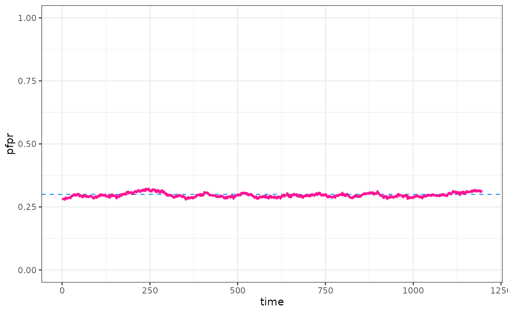

Basic calibration
Basic_calibration.RmdCalibrate good times, come on!
First, let’s define the target we are trying to match to. In this instance, we want to match to prevalence in 2-10 year olds at two time points:
# Define target, here a prevalence measures:
target <- 0.3You must supply a summary function when calibrating. This function
takes the raw model output and returns a vector (of length target), of
your target variable. For PfPr 2-10, we have an example helper function
that summarises mean prevalence
summary_mean_pfpr_2_10().
We also need to set up all other aspects of our simulation. In this case, we will set up a very basic model run:
parameters <- get_parameters()
parameters$timesteps <- 365 * 3First, let’s run a sense check that our summary function works!
run_simulation(
timesteps = parameters$timesteps,
parameters = parameters
) |>
summary_mean_pfpr_2_10()
#> [1] 0.6744576Looks good! The summary produces a prevalence summary in the same format as our target. Now time for the calibration. Here we set the tolerance to 0.005. This means that the distance between each target value and model output prevalence needs to be <0.5%. The tolerance is specified in the unit of the target variable. We also cheat a bit here and put a tight bound on the EIR to search to help speed up this code.
set.seed(123)
out <- calibrate(
parameters = parameters,
target = target,
summary_function = summary_mean_pfpr_2_10,
eq_prevalence = target,
human_population = c(10000, 100000)
)
#> Initialising EIR
#> Slice sampling EIR, side 1
#> Attempt 1 of 10
#>
#>
#> Current Target
#> -------- -------
#> 0.3 0.3
#>
#>
#>
#> EIR Objective
#> ---- ----------
#> 4.4 0.0039
#> 0.0 NA
#> Slice sampling EIR, side 2
#> Attempt 2 of 10
#>
#>
#> Current Target
#> -------- -------
#> 0.21 0.3
#>
#>
#>
#> EIR Objective
#> ---- ----------
#> 4.4 0.0039
#> 2.7 -0.0870
#> SuccessOk, we’ve calibrated. Lets run the calibrated model and see how we did.
parameters$human_population <- 5000
parameters <- set_equilibrium(parameters, init_EIR = out)
raw <- run_simulation(parameters$timesteps + 100, parameters = parameters)
pfpr <- raw$n_detect_lm_730_3650 / raw$n_age_730_3650
pd <- data.frame(time = 1:(parameters$timesteps + 100), pfpr = pfpr)
ggplot() +
geom_hline(yintercept = target, col = "dodgerblue", lty = 2) +
geom_line(data = pd, aes(x = time, y = pfpr), col = "deeppink", linewidth = 1) +
ylim(0, 1) +
theme_bw()
Tips and pointers!
Note, in many situations it will not be possible to calibrate tightly to targets, especially over multiple time points. We are just changing the baseline EIR, so any trends in targets over time would need to be captured by other aspects of the simulation set up - for example intervention coverage. Don’t expect to be able to match all data, you’ll never match a trend of increasing prevalence over time if you model run has increasing intervention coverage over time too!